A personal knowledge system, one that turns what you've read
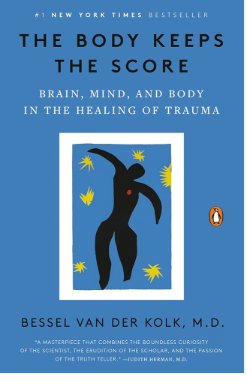

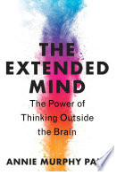
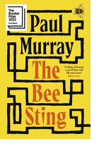

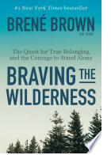
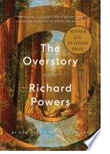
A personal audio soundtrack, built from everything you've read, that accompanies you into a museum, a city, an afternoon walk. And speaks at the moment of encounter.
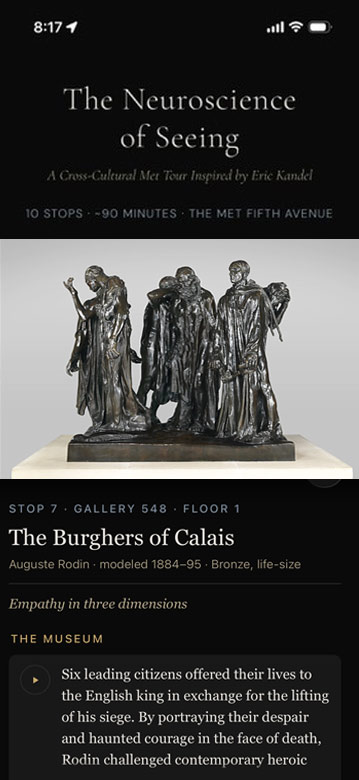
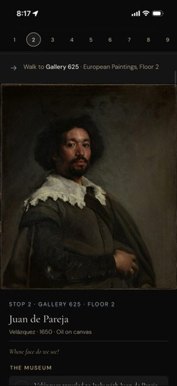
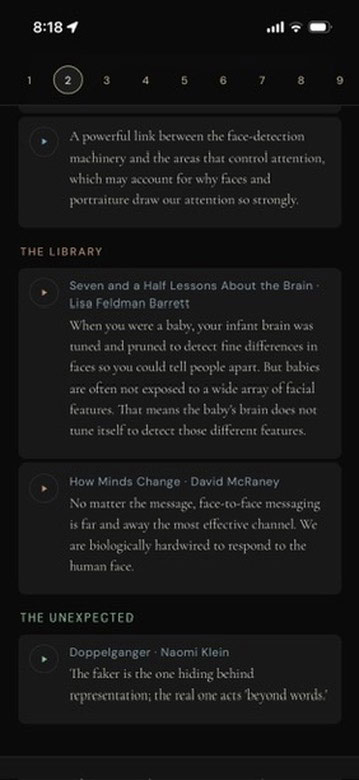
A soundtrack for experience.
Built first as a personal practice, to bring Eric Kandel's Essays on Art and Science into the world and into the body. Proven at The Metropolitan Museum of Art.
Your Knowledge Meets The Moment.
Ideas you've carried for years, suddenly finding each other
in the room you're standing in.
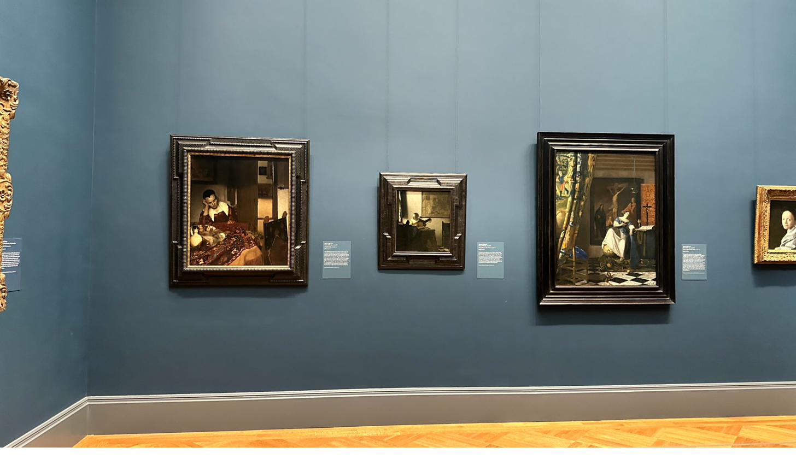
Three paintings on a blue wall.
One I've walked past before. But this time...

Look into the doorway. A room beyond.
Empty now. It wasn't always.
I hear the museum narrator discuss A Maid Asleep...
Vermeer transfigured an ordinary scene into an investigation of light, color and texture. X radiographs indicate that he chose to remove a male figure he had originally included standing in the doorway — heightening the painting's ambiguity.
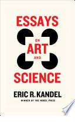
Essays on Art and Science
"The more ambiguous a work of art, the more top-down processing we must do to resolve the ambiguities and assign the work meaning, utility and value."
"The beholder's share — the knowledge, experience and memories a viewer brings to a work of art — can create very different conceptions of an ambiguous image."
"The poem has served history well
by remaining a blank sheet."
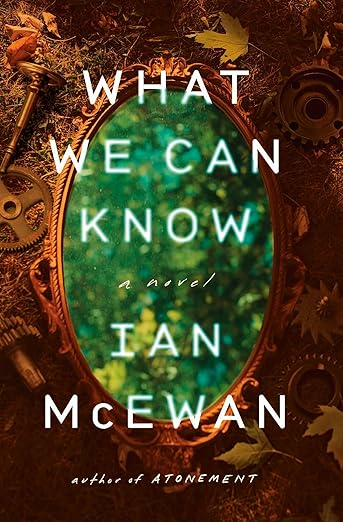
What We Can Know
A quote underlined in a novel, but forgotten.
Drawn to the surface in front of a 1656 Dutch painting.
In conversation with a Nobel Prize–winning neuroscientist.
I travel back to the landscape of McEwan's story.
I remember the physical act of underlining that passage.
I recognize in Vermeer's painting McEwan's "blank sheet." And the maid takes on breath, fueled by my own experiences of being young and alone in someone else's world.
I am surprised. And moved.
I have experienced what Kandel means when he describes the beholder's share.
Across brain, body, and space.
And I will not forget this painting.
And I will not forget this concept.
And I will not forget this book.
Nine more stops to go.
The system recognized something I hadn't — that these two ideas were already in conversation. It just waited for me to walk into the room.
The ten-stop Met Museum visit is the proof of concept. But the problem it solves: knowledge that lives unactivated, encounters that slip away unanchored, exists everywhere people encounter ideas worth remembering.
AI surfaces the connections. Humans experience the meaning.
Creating the ability to arrive at any encounter, a gallery, a performance, a city, a conversation, carrying everything you've read. And letting it speak.
A knowledge soundtrack for any encounter worth having. Your library, alive in the world.
A museum where every visitor hears a different tour, shaped by their own passions and experiences.
A publisher's catalog meets a museum's collection, and every intersection becomes a guided moment.
Kathryn Jones
Digital Storytelling & Media Innovation · Creative Producer · AI-Powered Experience Architect
Executive producer, strategist, and builder working at the intersection of creativity, technology, and knowledge.
"Some problems need a strategist. Some need a builder. Some need a producer. Some need all three."
Insatiable Mind began as a personal passion project, inspired by Annie Murphy Paul's The Extended Mind: The Power of Thinking Outside the Brain. Built out of the thrill of learning and the desire to retain what I've learned, to connect it to other things I've read, other places I've been, other ideas still forming. An antidote to the specific frustration of closing a book that changed how I think, and feeling it slip away before I've even left the chair.
Kathryn Jones
Insatiable Mind · New York
Get in touch
kathryn@projectbased.aiProven at The Metropolitan Museum of Art · New York
Voices generated with ElevenLabs